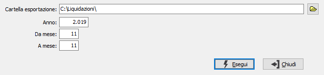

Esportazione dati IVA
La scelta è utilizzabile dalle aziende del gruppo ad eccezione della capo gruppo; la funzione richiede l'anno ed un periodo di mesi ed esporta i dati necessari alla compilazione della liquidazione Iva di gruppo; l'esportazione viene effettuata per i progressivi Iva relativi a periodi per cui è stata fatta la liquidazione Iva definitiva.

Il campo “Cartella esportazione” indica la cartella nella quale devono essere salvati i file generati, il campo può essere proposto in base a quanto indicato in configurazione nel campo “Cartella esportazione dati IVA”.
I campi “Anno” e “Da mese”, “A mese”, indicano il periodo per cui eseguire l’operazione, i campi sono preimpostati in base alla data di logon.